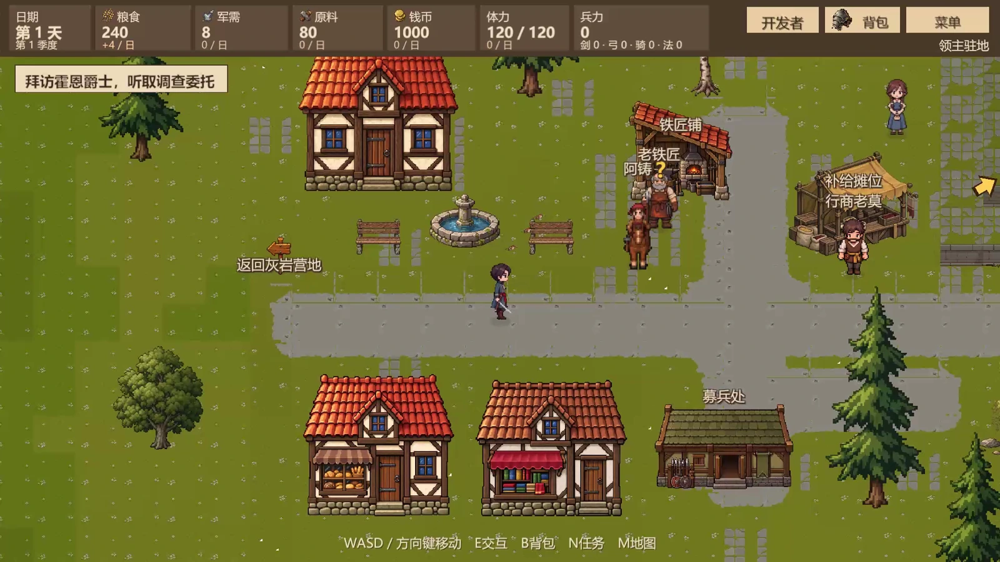
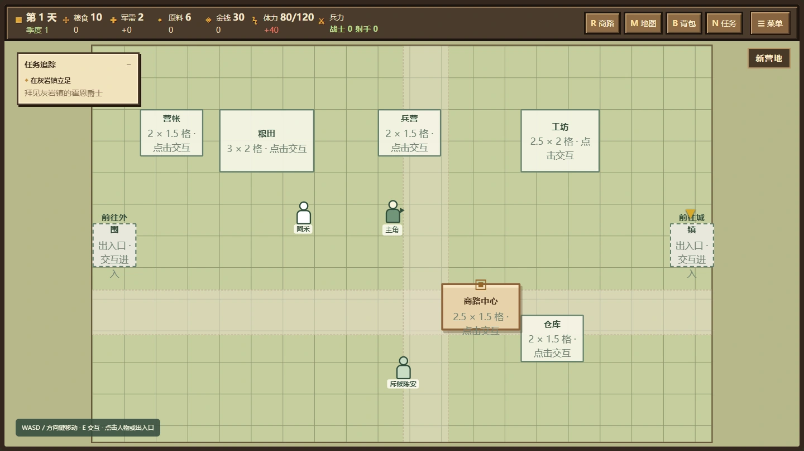

Unity Demo Windows / Android
断剑归途
带着白桦村的幸存者扎营、募兵，再打通返乡的路。粮田里的士兵也要上战场，出发前就能看到今天会少收多少粮。

01 / 06灰岩镇主街
Unity Demo Windows / Android
带着白桦村的幸存者扎营、募兵，再打通返乡的路。粮田里的士兵也要上战场，出发前就能看到今天会少收多少粮。

Web 浏览器试玩
把同一套经营与出征设计做成一段回合制战役。在营地派工、编队，再到棋盘上指挥队长。

断剑归途
GitHub 公开目录查看 DEMO 策划资料
系统与数值解析阅读《断剑归途》Demo 拆解案
从殖民者的能力与伤病，读到工作分配、基地布局和袭击防守。
沿角色获取、组队和高难挑战，追踪养成投入、商业化与版本运营。